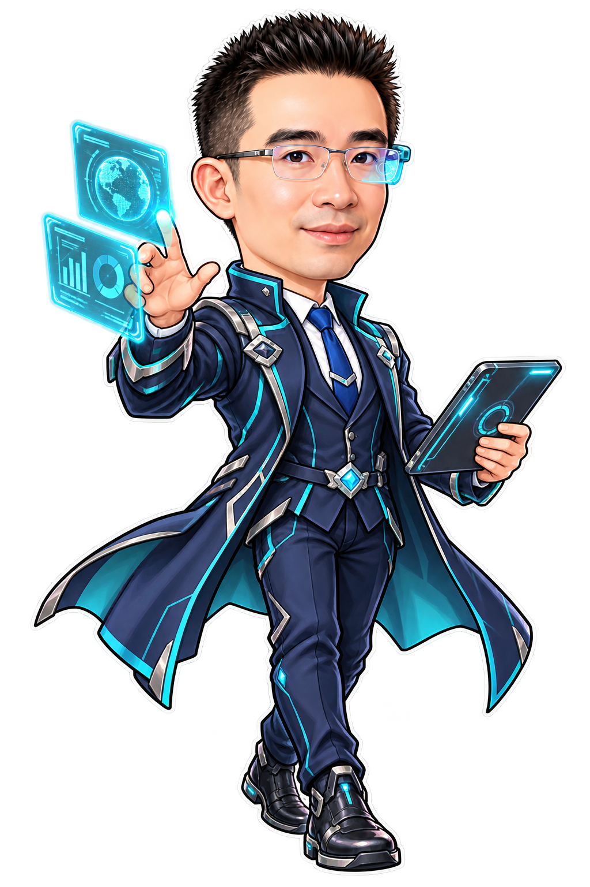
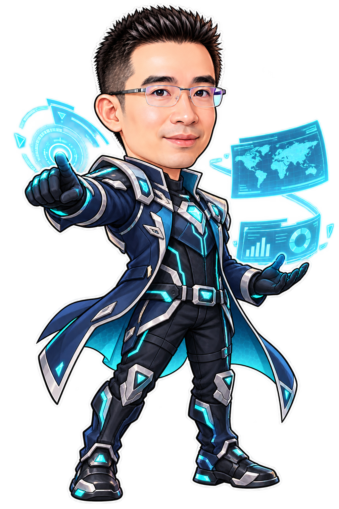
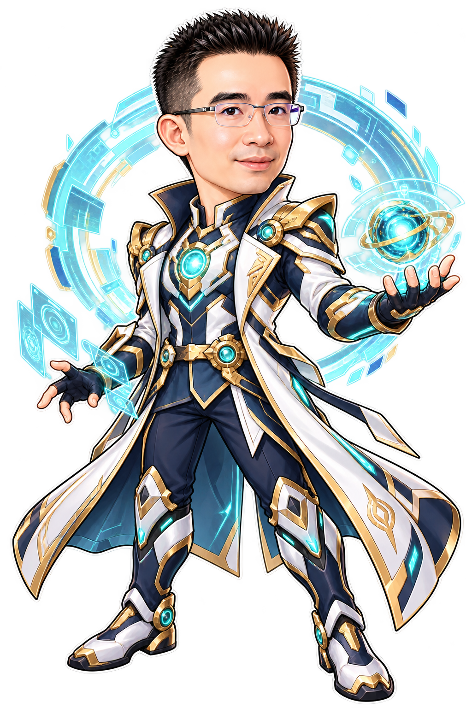
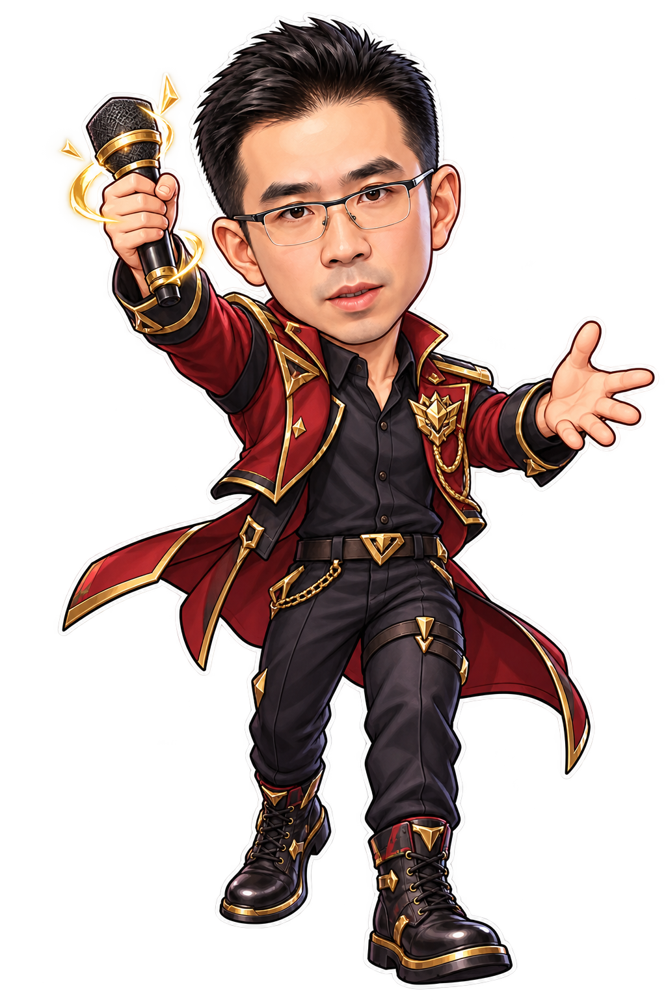
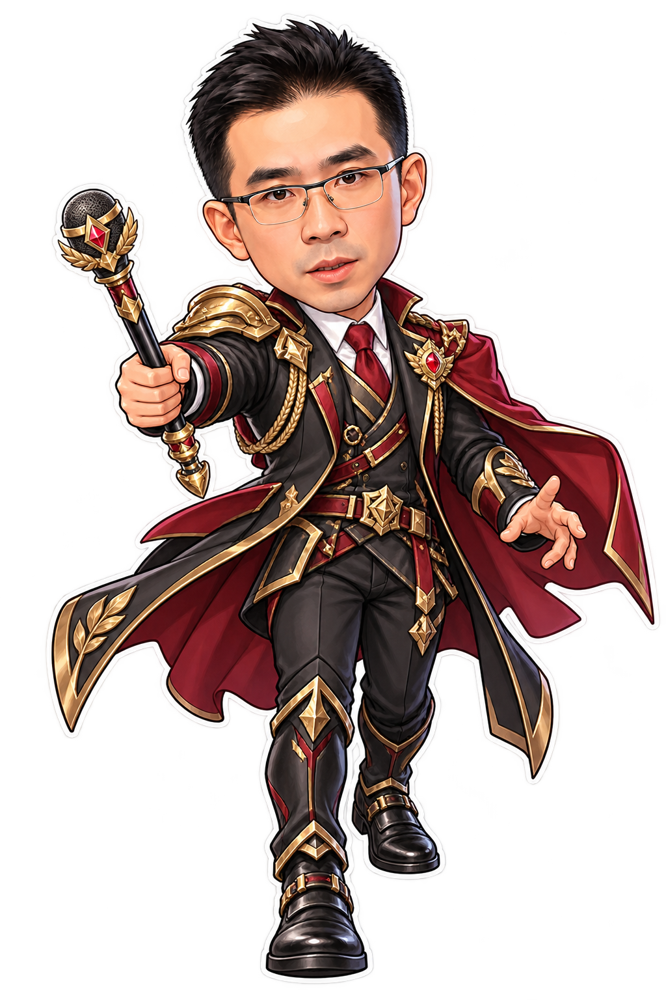
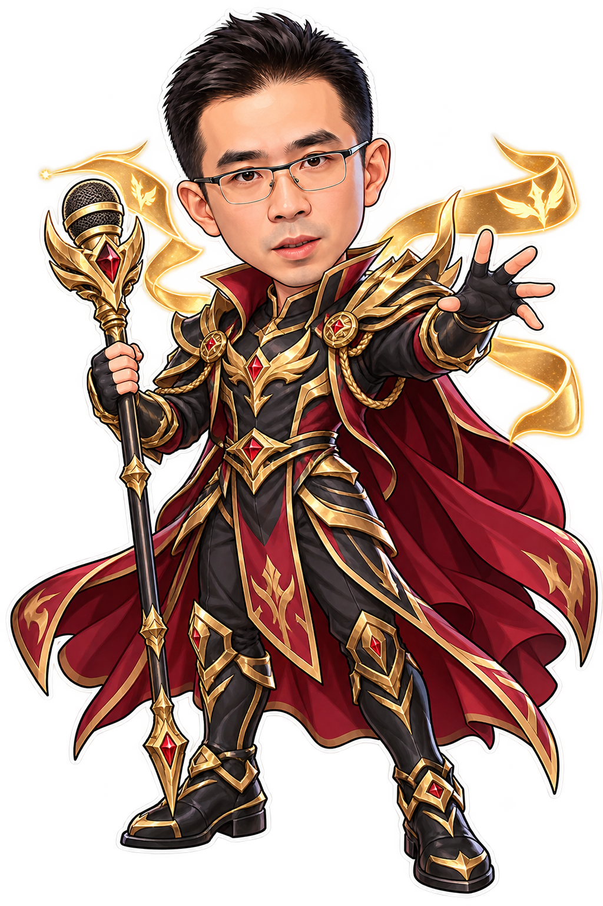
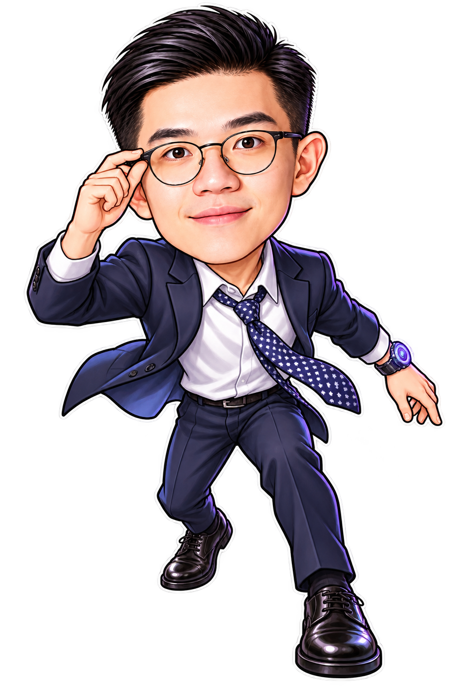
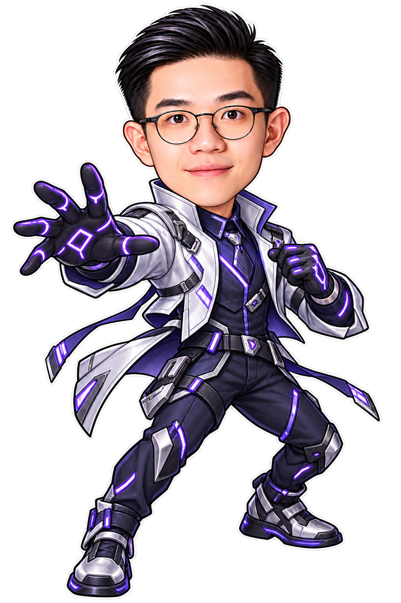
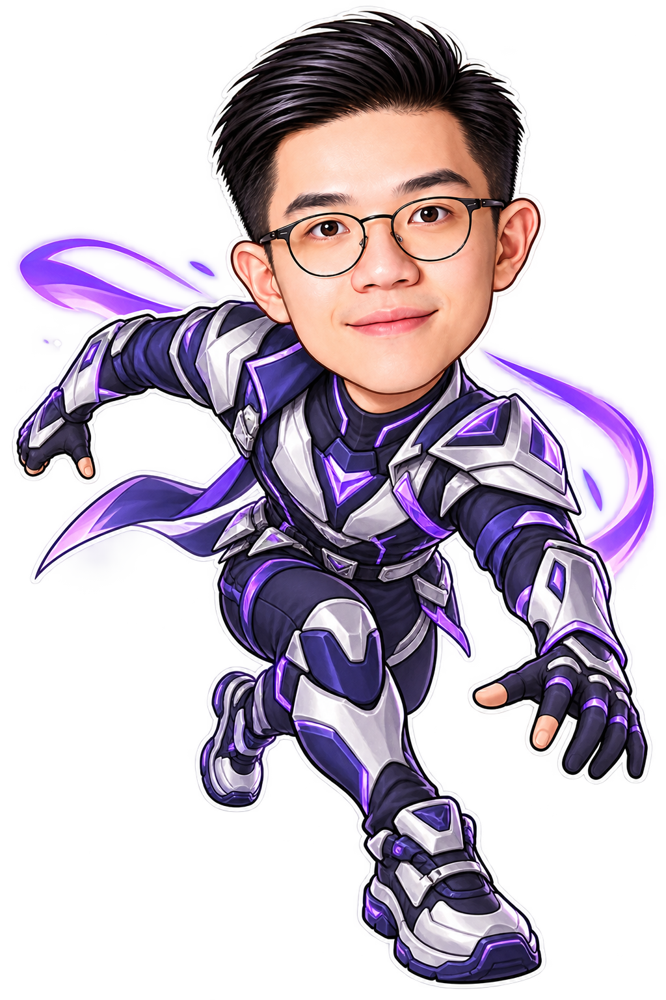
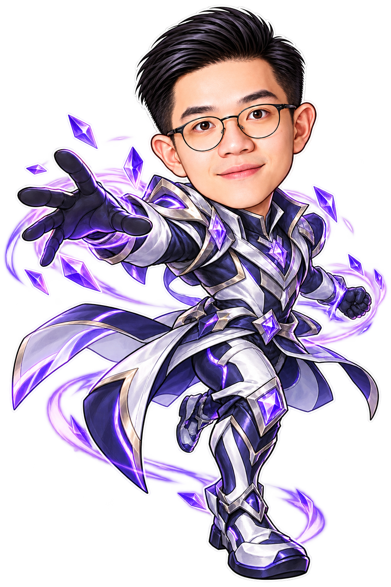

★☆☆☆☆
KEN
從商務觀察者，到掌握全域的未來領航者。
★★☆☆☆
數據分析師
開啟透明 PNG 原圖 ↗KEN · 2 星★★★☆☆

科技策劃者
開啟透明 PNG 原圖 ↗KEN · 3 星★★★★☆

全域指揮官
開啟透明 PNG 原圖 ↗KEN · 4 星★★★★★

未來領航者
開啟透明 PNG 原圖 ↗KEN · 5 星HOWARD
從新秀發言人，到凝聚隊伍的榮耀領袖。
★☆☆☆☆
新秀發言人
開啟透明 PNG 原圖 ↗HOWARD · 1 星★★☆☆☆
自信主講者
開啟透明 PNG 原圖 ↗HOWARD · 2 星★★★☆☆

團隊號召者
開啟透明 PNG 原圖 ↗HOWARD · 3 星★★★★☆

王牌統帥
開啟透明 PNG 原圖 ↗HOWARD · 4 星★★★★★

榮耀領袖
開啟透明 PNG 原圖 ↗HOWARD · 5 星HENRY
從沉著新星，到精準迅捷的極速決勝者。
★☆☆☆☆
沉著新星
開啟透明 PNG 原圖 ↗HENRY · 1 星★★☆☆☆

敏銳行動者
開啟透明 PNG 原圖 ↗HENRY · 2 星★★★☆☆

精準執行者
開啟透明 PNG 原圖 ↗HENRY · 3 星★★★★☆

瞬影王牌
開啟透明 PNG 原圖 ↗HENRY · 4 星★★★★★
